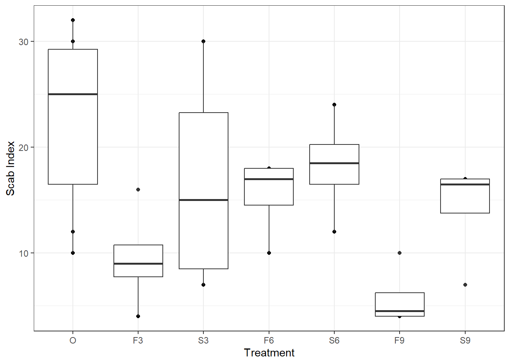

12 Completely Randomized Design
12.1 R package agriTutorial
R package agriTutorialR package agriTutorial- Used when experimental material is homogeneous
The following table shows some of the results of an experiment on the effects of applications of sulphur in reducing scab disease of potatoes. The object in applying sulphur is to increase the acidity of the soil, since scab does not thrive in very acid soil. In addition to untreated plots which serve as a control, 3 amounts of dressing were compared—300, 600, and 900 lb. per acre. Both a fall and a spring application of each amount was tested, so that in all there were seven distinct treatments. The sulphur was spread by hand on the surface of the soil, and then diced into a depth of about 4 inches. The quantity to be analyzed is the “scab index”. That is roughly speaking, the percentage of the surface area of the potato that is infected with scab. It is obtained by examining 100 potatoes at random from each plot, grading each potato on a scale from 0 to 100% infected, and taking the average.
Trt ScabIndex
1 O 12
2 O 10
3 O 24
4 O 29
5 O 30
6 O 18
7 O 32
8 O 26
9 F3 9
10 F3 9
11 F3 16
12 F3 4
13 S3 30
14 S3 7
15 S3 21
16 S3 9
17 F6 16
18 F6 10
19 F6 18
20 F6 18
21 S6 18
22 S6 24
23 S6 12
24 S6 19
25 F9 10
26 F9 4
27 F9 4
28 F9 5
29 S9 17
30 S9 7
31 S9 16
32 S9 17ScabIndex <-
c(
12, 10, 24, 29,
30, 18, 32, 26,
9, 9, 16, 4,
30, 7, 21, 9,
16, 10, 18, 18,
18, 24, 12, 19,
10, 4, 4, 5,
17, 7, 16, 17
)
Trt <- factor(
x = rep(x = 1:7, times = c(8, 4, 4, 4, 4, 4, 4))
, labels = c("O", "F3", "S3", "F6", "S6", "F9", "S9")
)
df13 <- data.frame(Trt, ScabIndex)
df13
p13 <-
ggplot(data = df13, mapping = aes(x = Trt, y = ScabIndex)) +
geom_point() +
geom_boxplot() +
labs(x = "Treatment", y = "Scab Index") +
theme_bw()
print(p13)
Call:
lm(formula = ScabIndex ~ Trt, data = df13)
Residuals:
Min 1Q Median 3Q Max
-12.625 -4.844 0.625 3.594 13.250
Coefficients:
Estimate Std. Error t value Pr(>|t|)
(Intercept) 22.625 2.369 9.549 0.000000000808 ***
TrtF3 -13.125 4.104 -3.198 0.003734 **
TrtS3 -5.875 4.104 -1.432 0.164666
TrtF6 -7.125 4.104 -1.736 0.094858 .
TrtS6 -4.375 4.104 -1.066 0.296601
TrtF9 -16.875 4.104 -4.112 0.000372 ***
TrtS9 -8.375 4.104 -2.041 0.051977 .
---
Signif. codes: 0 '***' 0.001 '**' 0.01 '*' 0.05 '.' 0.1 ' ' 1
Residual standard error: 6.702 on 25 degrees of freedom
Multiple R-squared: 0.4641, Adjusted R-squared: 0.3355
F-statistic: 3.608 on 6 and 25 DF, p-value: 0.01026fm13 <- lm(formula = ScabIndex ~ Trt, data = df13)
summary(fm13)Analysis of Variance Table
Response: ScabIndex
Df Sum Sq Mean Sq F value Pr(>F)
Trt 6 972.34 162.057 3.6081 0.01026 *
Residuals 25 1122.88 44.915
---
Signif. codes: 0 '***' 0.001 '**' 0.01 '*' 0.05 '.' 0.1 ' ' 1anova(fm13) Analysis of Variance Table (Type III SS)
Model: ScabIndex ~ Trt
SS df MS F PRE p
----- --------------- | -------- -- ------- ----- ----- -----
Model (error reduced) | 972.344 6 162.057 3.608 .4641 .0103
Error (from model) | 1122.875 25 44.915
----- --------------- | -------- -- ------- ----- ----- -----
Total (empty model) | 2095.219 31 67.588 supernova(fm13)